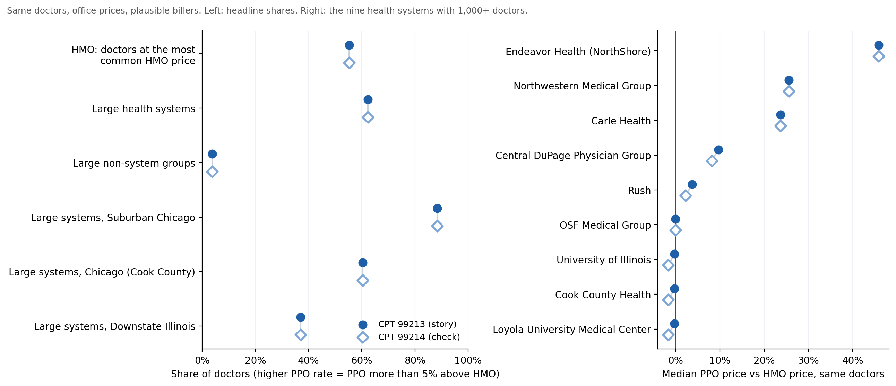
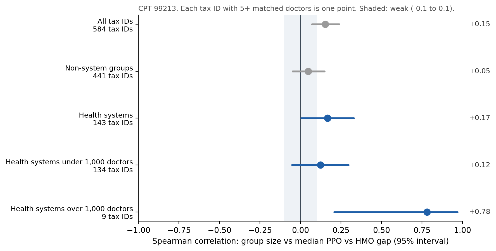
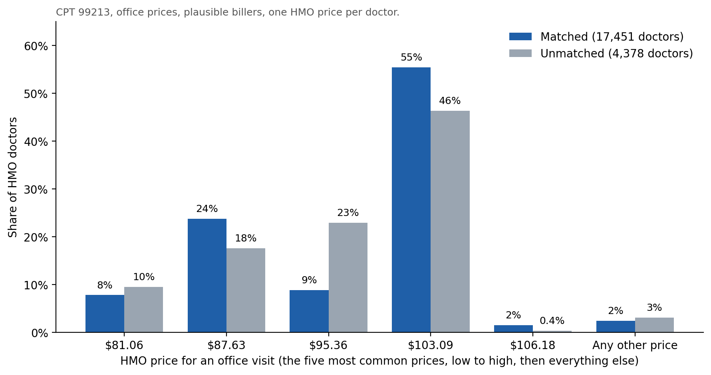
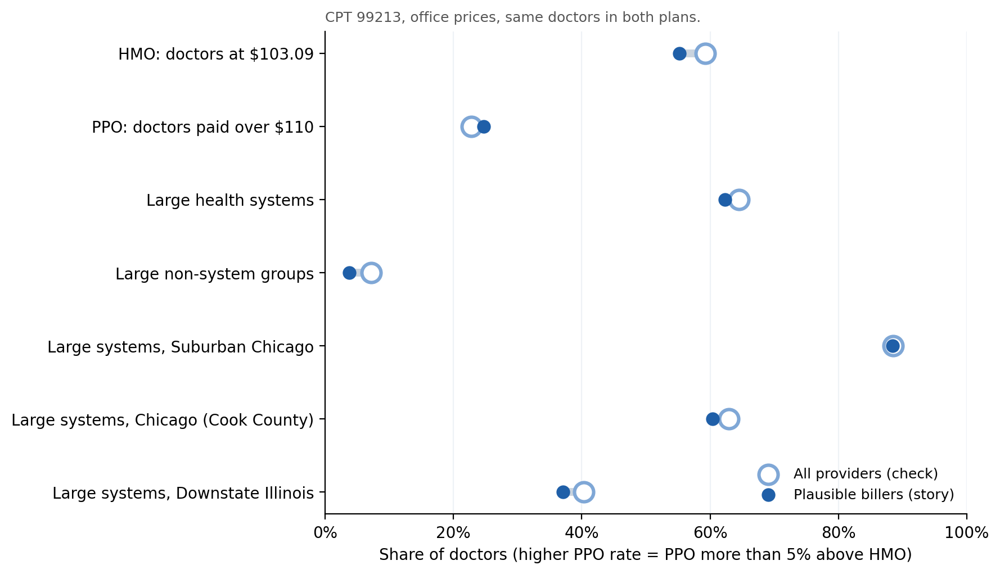
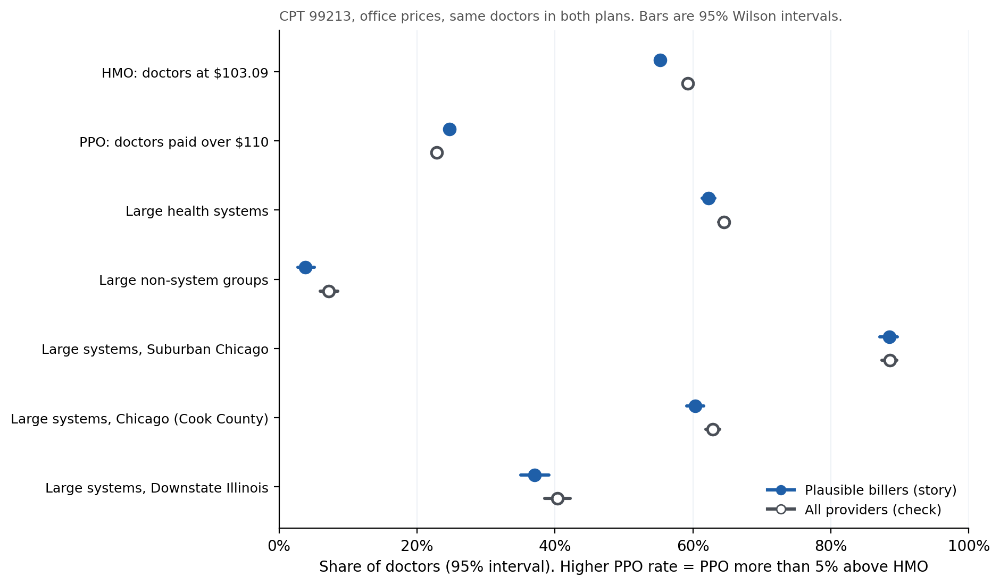

Check 1
The results hold for a longer office visit
The story uses CPT 99213, the most common office visit. This check rebuilds every headline result with the same steps for CPT 99214, the next most common visit.

| Finding | 99213 | 99214 | Difference |
|---|---|---|---|
| HMO doctors paid the HMO's most common price ($103.09 and $147.39) | 55% | 55% | none |
| Large health systems (1,000+ doctors) with a higher PPO rate | 62% | 62% | none |
| Large non-system groups with a higher PPO rate | 4% | 4% | none |
| Large systems, Chicago suburbs | 88% | 88% | none |
| Large systems, Chicago (Cook County) | 60% | 60% | none |
| Large systems, downstate | 37% | 37% | none |
| Size vs gap, health systems (Spearman correlation) | 0.17 | 0.17 | none |
| Nine largest systems, median gap | within 2 points for every system | small | |
Why the two codes agree so closely
Both plans price a 99214 visit as a fixed multiple of a 99213 visit: the HMO at exactly 1.43 times, and the PPO at about 1.41 times. So each contract's PPO vs HMO gap carries over to the second code almost unchanged.
This is a supporting finding. It fits the story's contract-by-contract results, since the same contracts show the same gaps on both codes. Because the two prices move together, though, 99214 confirms the 99213 results more than it tests them independently. A service priced on a different basis, like the brain MRI, can go the other way.
Check 2 · CPT 99213
Size alone is a weak predictor
If bigger always meant more leverage, the PPO vs HMO gap would rise steadily with group size. This check treats each PPO tax ID with 5 or more matched doctors as one point and measures how well size ranks the gap, using the Spearman correlation. It runs from −1 to +1, and values near 0 mean size tells you little.

| Group | Tax IDs | Correlation | 95% interval |
|---|---|---|---|
| All tax IDs | 584 | 0.15 | 0.07 to 0.24 |
| Non-system groups | 441 | 0.05 | −0.05 to 0.15 |
| Health systems | 143 | 0.17 | 0.01 to 0.33 |
| Health systems under 1,000 doctors | 134 | 0.12 | −0.05 to 0.30 |
| Health systems over 1,000 doctors | 9 | 0.78 | 0.21 to 0.97 |
- For most groups, size barely matters. Non-system groups show no relationship, and health systems under 1,000 doctors show none that can be told apart from zero.
- The relationship appears only at the very top. Among the nine systems with over 1,000 doctors, bigger systems tend to have bigger gaps. With only nine points, the interval is wide, from 0.21 to 0.97, and systems just as large (OSF, the University of Illinois, Loyola, Cook County Health) sit at about 0%.
- That is why the story tells the leverage finding contract by contract rather than as "bigger means pricier."
Check 3 · CPT 99213
Matched doctors look like the doctors I couldn't match
This check uses the story's code, CPT 99213, the routine office visit, with office prices and plausible billers.
The story only uses matched doctors, who have a price in both the PPO and an HMO. Unmatched doctors have a price in just one plan, so their PPO vs HMO gap can't be measured. Their prices in that one plan can still be compared with the matched doctors'. Here the unmatched doctors include those practicing outside Illinois, who were left out of the story and are labeled separately.
Inside the large systems: PPO prices
Unmatched counts include system doctors at locations outside Illinois.
| System | Matched doctors | Unmatched doctors | Median PPO, matched | Median PPO, unmatched |
|---|---|---|---|---|
| Endeavor Health (NorthShore) | 2,574 | 312 | $150.32 | $127.77 |
| Northwestern Medical Group | 2,905 | 1,061 | $129.52 | $129.52 |
| Carle Health | 116 | 1,650 | $117.96 | $117.96 |
| Central DuPage Physician Group | 1,056 | 187 | $113.14 | $113.14 |
| Rush | 297 | 1,379 | $106.96 | $106.96 |
| University of Illinois | 1,236 | 353 | $102.85 | $102.85 |
| Cook County Health | 507 | 504 | $102.85 | $102.85 |
| Loyola University Medical Center | 708 | 90 | $102.85 | $102.85 |
| OSF Medical Group | 1,509 | 1,274 | $95.36 | $95.36 |
Inside the large systems: HMO prices
A system's HMO contract is often held by a different tax ID than its PPO contract, and one HMO tax ID can cover several systems. This table follows the HMO contracts that the systems' matched doctors bill under.
| HMO contract (systems it covers) | Group | Doctors | Median HMO price | At $103.09 |
|---|---|---|---|---|
| NorthShore Physician Associates (Endeavor) | Matched | 3,839 | $103.09 | 66% |
| Unmatched | 225 | $103.09 | 68% | |
| Cadence Medical Partners (Northwestern, Central DuPage) | Matched | 4,259 | $103.09 | 58% |
| Unmatched | 397 | $103.09 | 75% | |
| University of Illinois | Matched | 1,078 | $103.09 | 75% |
| Unmatched | 176 | $103.09 | 89% | |
| Loyola (HMO Illinois) | Matched | 1,244 | $103.09 | 77% |
| Unmatched | 97 | $103.09 | 78% | |
| Cook County Health | Matched | 389 | $103.09 | 92% |
| Unmatched | 53 | $103.09 | 93% | |
| OSF Healthcare System (OSF) | Matched | 1,660 | $81.06 | 0% |
| Unmatched | 370 | $95.36 | 0% |
Five of the six contracts pay a median of exactly $103.09 to both groups. OSF's downstate contract uses lower standard prices, $81.06 and $95.36, and its unmatched doctors sit on the higher of the two.
Is the HMO's standard price still the standard?
The story's chart showed HMO prices piling up on a few amounts, with $103.09 the most common. Here is the same spread for unmatched HMO doctors.

$103.09 is the most common price in both groups, and 97% of doctors in each group are on one of the same five standard prices. Unmatched doctors sit more often at $95.36, the price common outside Chicago.
By region, including doctors outside Illinois
The story covers three Illinois regions. Doctors practicing outside Illinois were left out of it, and they appear here as their own row.
| Region | Group | Doctors | In health systems | Median PPO price | Paid over $110 |
|---|---|---|---|---|---|
| Chicago (Cook County) | Matched | 16,117 | 61% | $102.85 | 26% |
| Unmatched | 19,450 | 28% | $102.85 | 4% | |
| Chicago suburbs | Matched | 8,109 | 50% | $102.85 | 31% |
| Unmatched | 9,271 | 21% | $102.85 | 5% | |
| Downstate Illinois | Matched | 5,469 | 69% | $95.36 | 13% |
| Unmatched | 21,145 | 52% | $95.36 | 17% | |
| Outside Illinois (not in the story) | Unmatched | 14,305 | 48% | $102.85 | 14% |
| Region | Group | Doctors | Most common HMO price | On a standard price |
|---|---|---|---|---|
| Chicago (Cook County) | Matched | 9,827 | $103.09 | 97% |
| Unmatched | 1,394 | $103.09 | 99.6% | |
| Chicago suburbs | Matched | 4,736 | $103.09 | 98% |
| Unmatched | 148 | $103.09 | 99% | |
| Downstate Illinois | Matched | 2,888 | $81.06 | 98% |
| Unmatched | 60 | $81.06 | 98% | |
| Outside Illinois (not in the story) | Unmatched | 2,775 | $103.09 | 95% |
Matched doctors outside Illinois show "none" because the story's matching kept Illinois doctors only. "Standard price" means one of the HMO's five most common prices statewide.
What this shows
- Inside each system, matched doctors are representative. Eight of the nine largest systems have the identical median PPO price for matched and unmatched doctors, and five of the six HMO contracts pay both groups the same median.
- Endeavor is the one PPO exception. Its unmatched doctors have a lower median, $127.77, but that is still well above the HMO's $103.09.
- The HMO's standard price holds beyond the sample. $103.09 is the most common HMO price for matched and unmatched doctors alike, in Chicago, in the suburbs, and even among doctors outside Illinois.
- Region by region, prices line up, and composition doesn't. In every region, the median PPO price is the same for matched and unmatched doctors. But in Chicago and the suburbs, matched doctors are about twice as likely to be in a health system, so far more of them are paid over $110. So a statewide figure in the story, like "1 in 4 paid over $110 in the PPO", describes the doctors I could compare, not every BCBS PPO doctor.
- Downstate rests on a thinner slice. About 1 in 5 downstate PPO doctors matched (5,469 of 26,614), compared with almost half in Chicago and the suburbs.
Limits of this check
- HMO contracts often use different tax IDs than the PPO, and one HMO tax ID can cover several systems, so most HMO doctors can't be sorted into health system vs non-system or assigned to a single system.
- "Not in the PPO file" can mean the doctor is out of network, listed without a dollar price, or practices outside Illinois. The files don't always say which.
- Region comes from each doctor's practice address in the national provider registry, which can lag behind moves.
Check 4 · CPT 99213
The results hold for all providers
The story keeps only plausible billers, the provider types who would normally bill an office visit. The price files list a price for every provider in a contract, even those who would never bill the code, such as a radiologist with an office-visit price, so the filter screens those out. This check drops the filter: 25,874 doctors instead of 17,451.

Every share moves by 4 points or less, and the order of the findings doesn't change: large systems still get a higher PPO rate far more often than large non-system groups, and the suburbs still lead. The filter sharpens the numbers without creating the pattern.
The size correlation for health systems also stays weak: 0.17 with the filter, 0.12 without it. Check 5 puts confidence intervals on each of these numbers.
Check 5 · CPT 99213
How confident can we be?
Check 4 showed that dropping the plausible-biller filter moves the headline shares by a few points. The chart asks whether those moves are bigger than the uncertainty in the numbers themselves; the table below it lists the values.
How to read it
- Each dot has a bar, its 95% confidence interval: the range it would likely fall in if the doctors could be drawn again. Large groups get narrow ranges, small groups wider ones.
- If the two bars in a row overlap, the filter's effect can't be told apart from chance.
- If they don't overlap, the filter really does change that number. The question then is whether it changes the story.

| Finding | Plausible billers (story) | All providers | Difference |
|---|---|---|---|
| HMO doctors at $103.09 | 55% | 59% | +4 points |
| PPO doctors paid over $110 | 25% | 23% | −2 points |
| Large health systems with a higher PPO rate | 62% | 65% | +2 points |
| Large non-system groups with a higher PPO rate | 4% | 7% | +3 points |
| Large systems, Chicago suburbs | 88% | 88% | none |
| Large systems, Chicago (Cook County) | 60% | 63% | +3 points |
| Large systems, downstate | 37% | 40% | +3 points |
| Size vs gap, health systems (Spearman correlation) | 0.17 | 0.12 | −0.05 |
What this shows
- The numbers are measured precisely. Most intervals are only 1 to 2 points wide, because the groups are large. Even the smallest group, large non-system groups, is measured to within about 1 to 1.5 points either way.
- The filter does shift some numbers, a little. Five of the seven shares move by more than the uncertainty, by 2 to 4 points.
- None of the shifts changes the story. In both versions, large health systems get a higher PPO rate far more often than large non-system groups (62% to 65% vs 4% to 7%), the suburbs stay highest, downstate stays lowest among the large systems, and $103.09 stays the HMO's most common price.